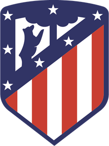
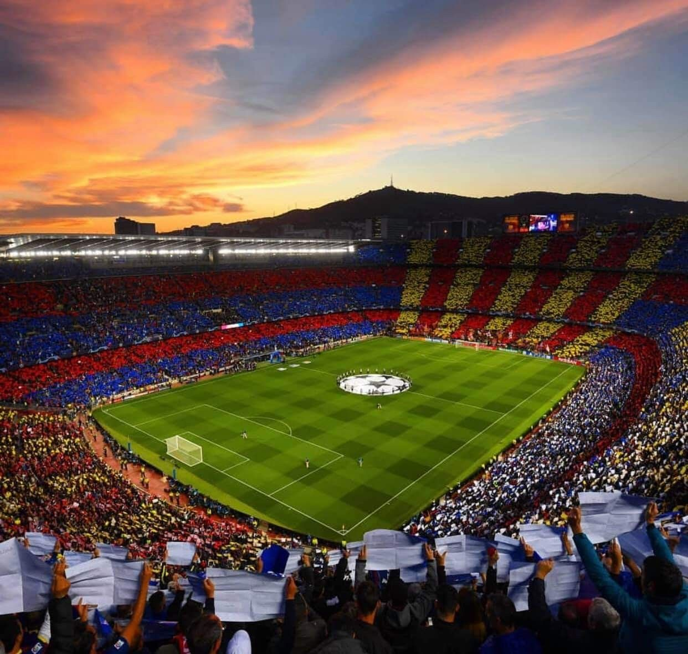
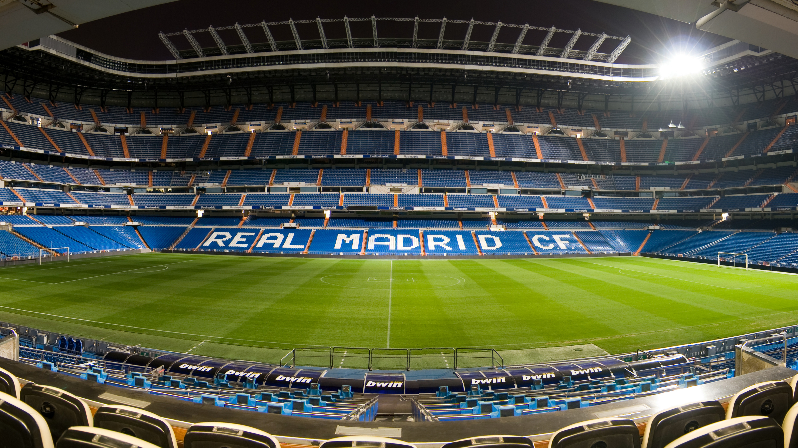
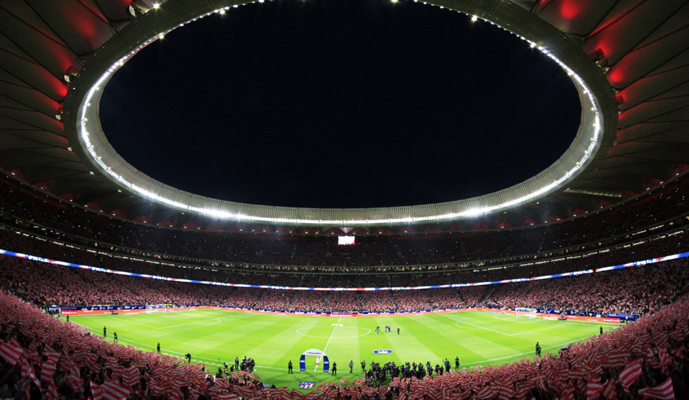
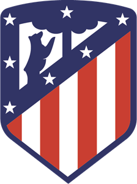
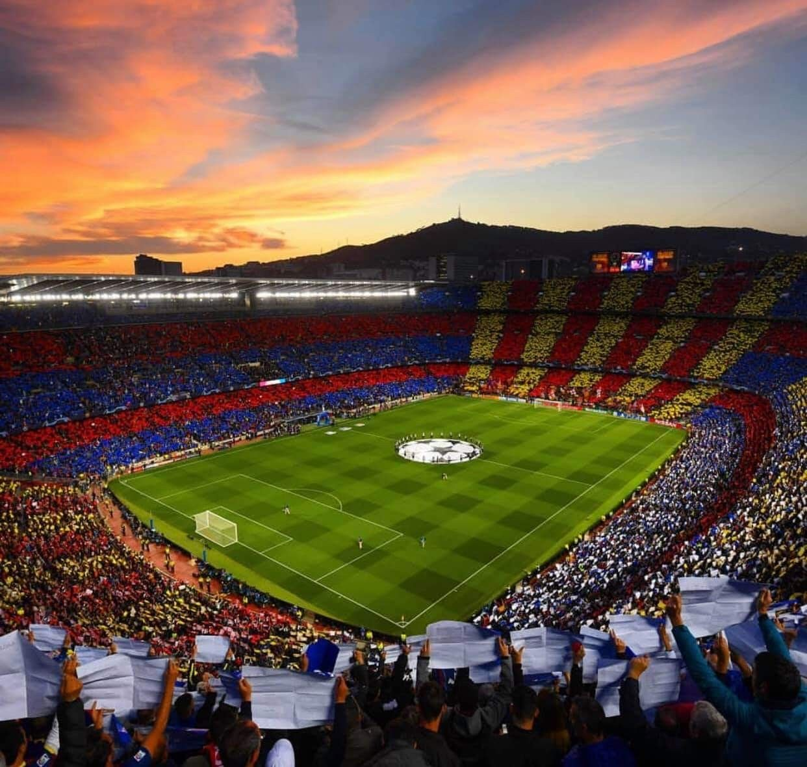
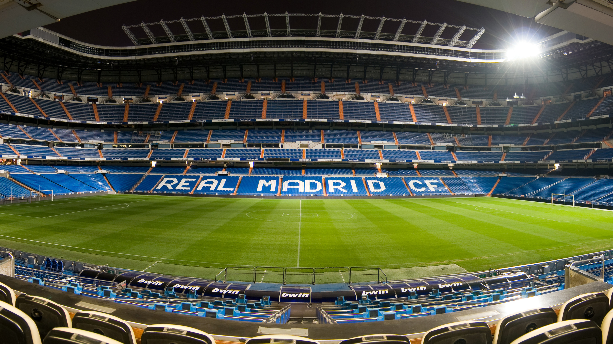
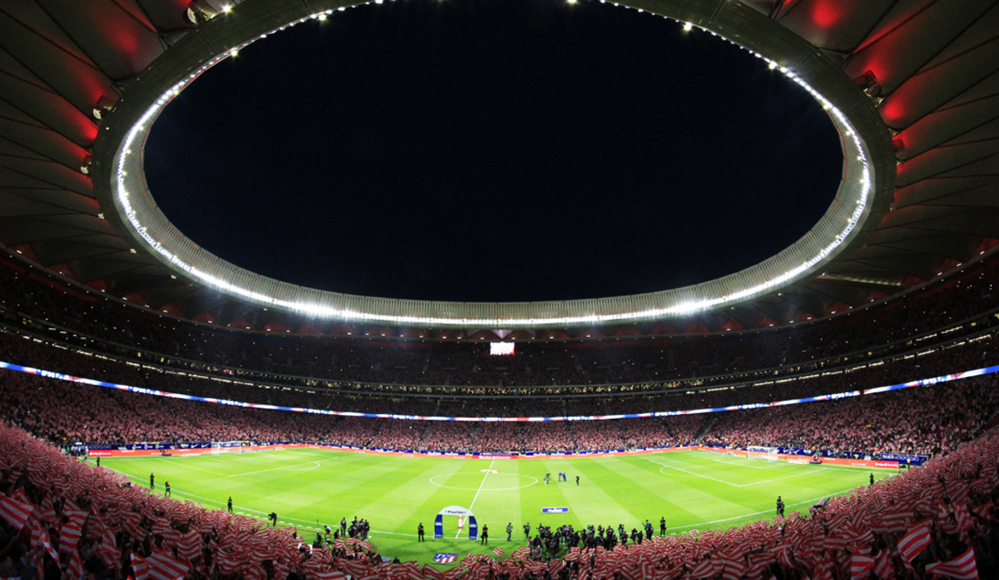

FOOTBALLISTA

It is the spainish League and it consederd as one of the most important Leagues because of Barcelona and Real Madrid

 







Futbol Club Barcelona, commonly referred to as Barcelona and colloquially known as Barca,
is a Spanish professional football club based in Barcelona, Catalonia, Spain.
La Liga 26
Copa del Rey 30
Supercopa de Espana 13
UEFA Champions League 5
UEFA Super Cup 5
FIFA Club World Cup 3
Real Madrid Club de Fútbol, meaning Royal Madrid Football Club,
is a Spanish professional football club based in Madrid.
La Liga 33
Copa del Rey 19
Supercopa de Espana 11
UEFA Champions League 13
UEFA Super Cup 4
FIFA Club World Cup 4
Club Atlético de Madrid commonly referred to as Atlético de Madrid,
is a Spanish professional football club based in Madrid.
La Liga 10
Copa del Rey 10
Supercopa de Espana 2
UEFA Champions League 3
UEFA Super Cup 3
FIFA Club World Cup 1